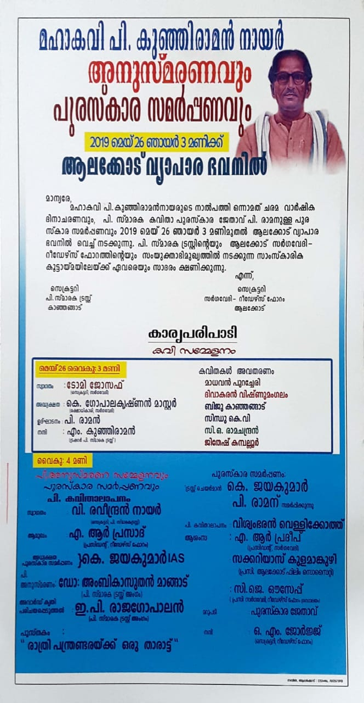

അനുസ്മരണം: മഹാകവി പി കുഞ്ഞിരാമൻ നായർ അനുസ്മരണവും സാഹിത്യ പുരസ്കാര സമർപ്പണവും
26/05/2019
സർഗവേദി റീഡേഴ്സ് ഫോറം, പി സ്മാരക ട്രസ്റ്റ് കാഞ്ഞങ്ങാട്
അനുസ്മരണം
ആലക്കോട് വ്യാപാര ഭവൻ
മഹാകവി പി കുഞ്ഞിരാമൻ നായർ അനുസ്മരണവും സാഹിത്യ പുരസ്കാര സമർപ്പണവും

മഹാകവിയുടെ പേരിലുള്ള 2019 വർഷത്തെ അവാർഡ് ഡോ . അംബികാസുതൻ മാങ്ങാട് കവി പി. രാമന് സമ്മാനിക്കുന്നു (പുസ്തകം - രാത്രി പന്ത്രണ്ടരക്ക് ഒരു താരാട്ട്). എഴുത്തുകാരായ ഇ പി രാജഗോപാലൻ, മാധവൻ പുറച്ചേരി, സിന്ധു കെ.വി, ബിജു കാഞ്ഞങ്ങാട്, ജിതേഷ് കമ്പല്ലൂർ, ദിവാകരൻ വിഷ്ണുമംഗലം തുടങ്ങിയവർ പങ്കെടുത്തു.